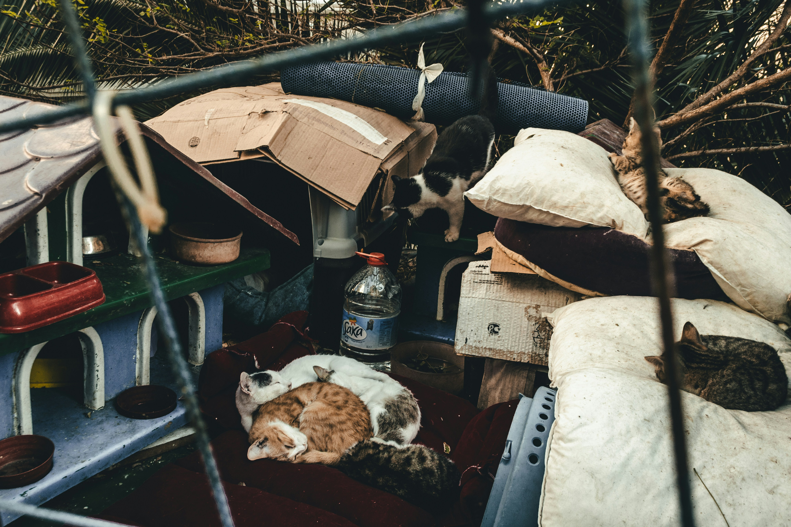

1. Animal Rescue & Veterinary Rehabilitation
Our team responds to reports of abandoned, injured, or neglected animals. Upon arrival at our shelter, every animal receives immediate medical intervention.
- Emergency triage and veterinary treatment
- Core vaccinations, deworming, and parasite treatment
- Mandatory spay/neuter surgical procedures
- Behavioral rehabilitation for trauma recovery
